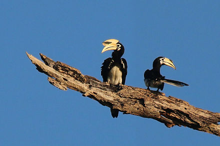

The species is considered to be among the smallest and most common of the Asian hornbills. It has the largest distribution in the genus and is found in the Indian Subcontinent and throughout Southeast Asia. Its natural habitat is subtropical or tropical moist lowland forests. The oriental pied hornbill's diet includes fruit, insects, shellfish, small reptiles and, sometimes, small mammals and birds including their eggs.
Learn more at this link